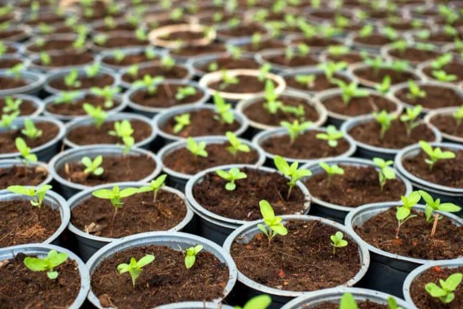
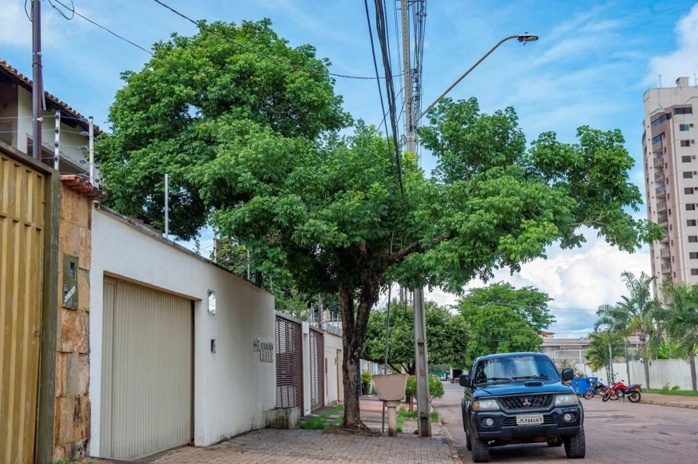
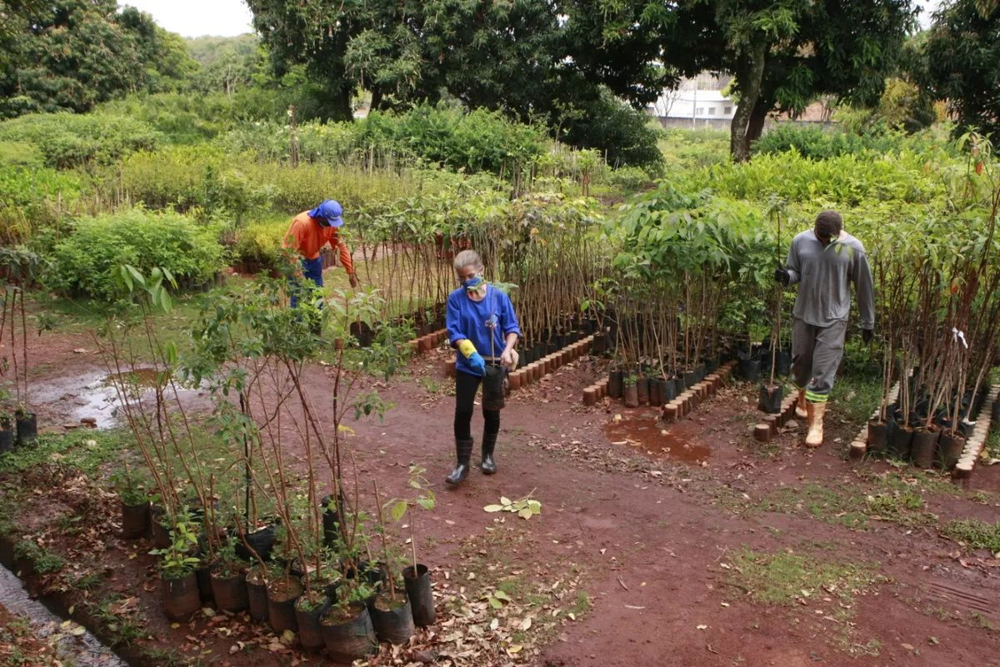

Plantio e Preservação de Árvores
A forma mais direta de resfriar a cidade é aumentar a cobertura vegetal. Árvores nativas são as mais indicadas: se adaptam melhor ao clima, exigem menos cuidados e oferecem sombra e umidade por mais tempo.
Planejamento Urbano com Áreas Verdes
Parques, praças e corredores verdes nos projetos da cidade distribuem o frescor por todos os bairros. Ruas arborizadas reduzem a temperatura em até 5 °C e tornam os espaços mais agradáveis.
Educação e Conscientização
Informar a população sobre a importância das árvores faz cada pessoa cuidar do que existe. Escolas, famílias e instituições podem se unir em campanhas de plantio e proteção das áreas verdes.
💡 Ações Simples que Fazem a Diferença



🌿 Conclusão
Cada árvore plantada é um passo para uma Jequié mais fresca, saudável e bonita. A mudança começa com a gente! Preservar o meio ambiente não é só cuidar da natureza — é cuidar de nós mesmos.
Quer rever os números?
Volte às medições e compartilhe o projeto com quem você conhece.
Ver as medições